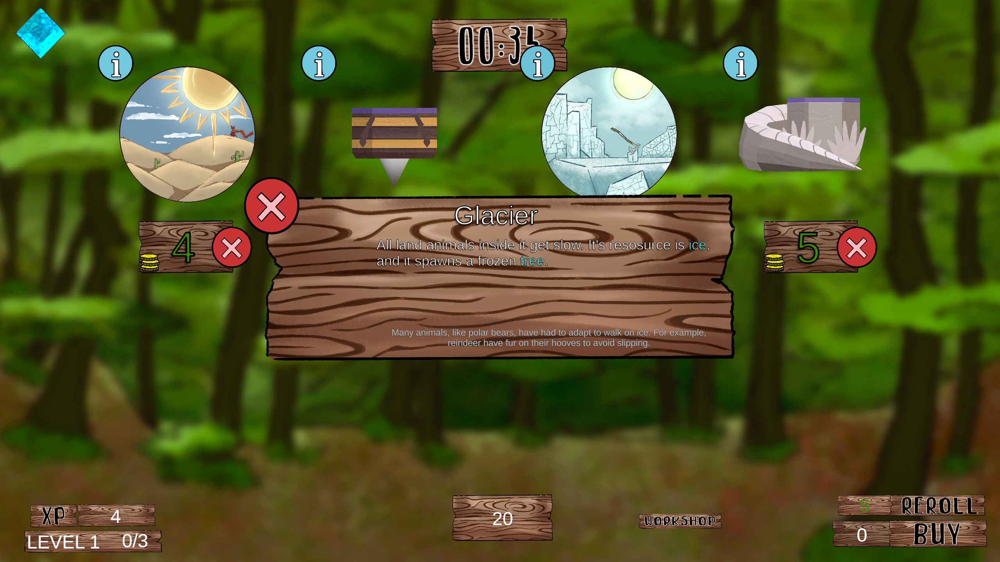
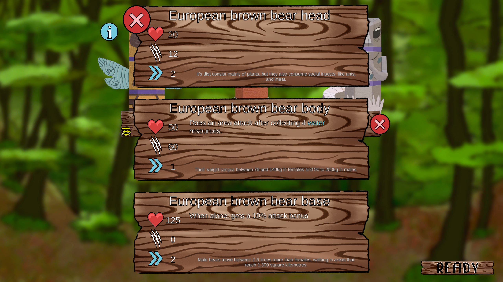

Doodem


My roles in Doodem
Doodem is a 1vs1 web auto-battle game where players mix animals with special abilities to fight for them.
I was in charge of coding the animal AI, attacks, mixing, and shop. I also had to implement several multiplayer features and the info menu for the totem parts. Lastly, I was very involved with the game design, until I had to focus on programming.
THE GAME DESIGN
The totems
I took part in the early design of the game, until I had to shift my focus to coding. We wanted to make an auto-battler from the start. In order to add depth and replayability to the game we decided to make the troops combinable, since the number of combinations grows exponentially.
We settled for 3 body-parts, since it’s both a reasonable amount of pieces, and a good way to divide a body. The idea was to make each part fill a role. On the one hand, this avoids redundancies and ensures every combination has something interesting. For example:
- Every head has an attack. This prevents combinations without actions.
- The flight trait is exclusive to the body.
- The body normally has the highest health stats, which helps with balancing when mixing parts.
- The rears’ abilities don’t deal damage.
One more thing we had to consider when designing the game was it had to be accessible to PC and mobile devices, since it was a requirement of the university project.
THE PROGRAMMING
Backend
The other programmer and I worked hand in hand in the multiplayer, through Unity’s NGO and remote procedural calls (RPCs). The multiplayer features are the synchronisation of the animals, terrain elements and the current game phase and status.
The totems
On the store it’s possible to buy totem pieces and biomes. The information for each is stored as Scriptable objects. You can mix totem pieces in any way, as long as each totem only has 1 of each body part. Incomplete totems won’t be playable. Each totem is a class that stores the 3 parts. An external class handles the body-part dragging and exchanging parts between totems. Body-parts that aren’t part of a totem actually are totems that don’t accept new parts. Thanks to this, they can be implemented without extra code.
Animals and Animal AI
Connecting bodyparts of different animals when the totems transform might seem complex at first. Fortunately, we can lean on the “action figure” look of the creatures. We can accomplish that by defining anchor/attachment points (empty unity transforms) where each part is meant to connect with the others. Then, we align said points when creating the creature.
When making the animal AI I had to take into account that:
- Different body parts with different attacks and abilities can be on the same body
- Different abilities need recollecting resources in order to be used.
My solution was making each body-part with attacks and abilities subscribe to the animal brain, and tell it it’s requirements (needed resources, attack speed, range, etc.). Then, the brain chooses an objective based on proximity to resources and enemies, and calls the abilities when applicable. That way, the brain doesn’t need to know how any ability or attack is implemented, and each ability and attack can exist without knowing anything about the others. This makes the system easily expandable with new pieces and abilities.
Multiplayer and webgame
Doodem uses Unity's NetCode for GameObjects (NGO) for the multiplayer. Special attention was put in synchronising the game-state (resources).
The web-based game format provides access to the game from any device. This shaped certain considerations. We had to account for the smaller screen size for smartphones, both on the amount of info shown, and specially the ways to interact with the game. Another aspect was the lower capabilities of web-based games, although the impact was more noticeable for the 3D art team.
Other
Using the scriptable objects, I programmed an information system that shows stats, item name and description,
and a flavour text. Additionally, it highlights keywords (such as status effects and resource names) automatically.
Since each section is modular, it can show 1-3 items at the same time.


FLAVOUR TEXTS
I researched interesting pieces of information about each animal, one per body-part, that are displayed alongside their stats. These tidbits add some flair and polish to the game.